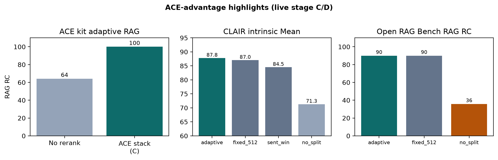
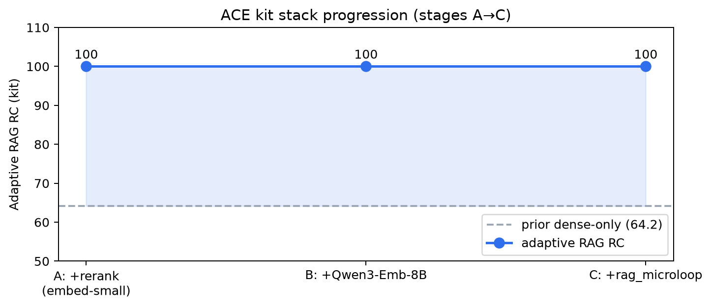
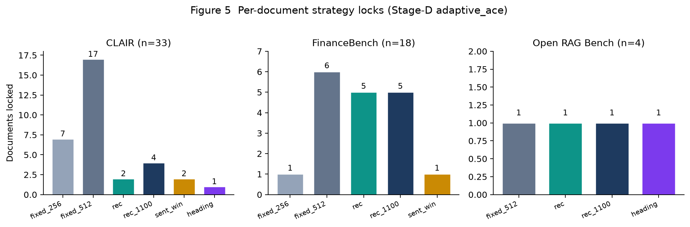
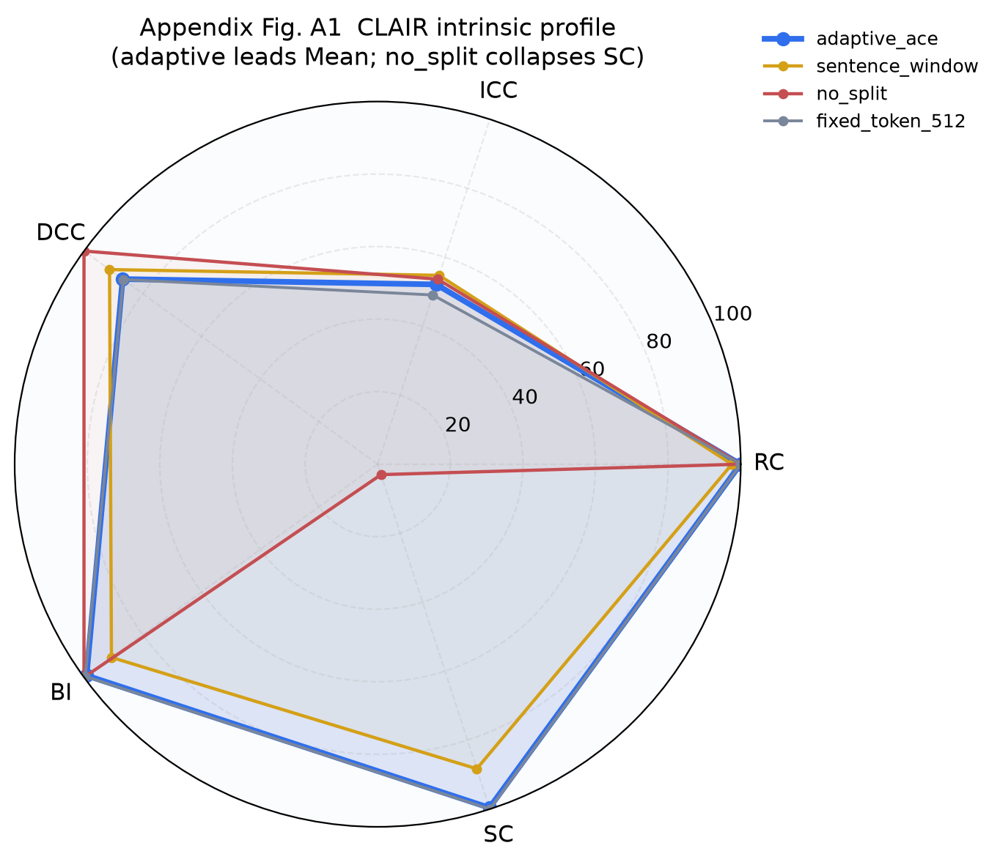
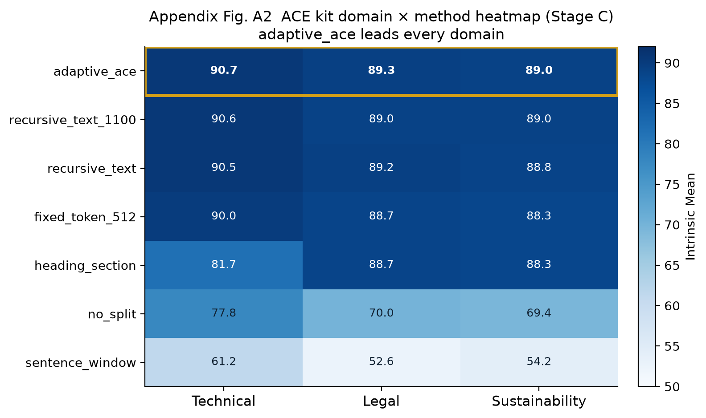
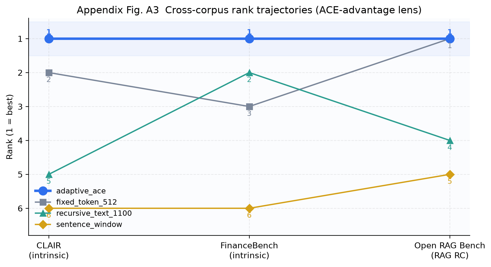
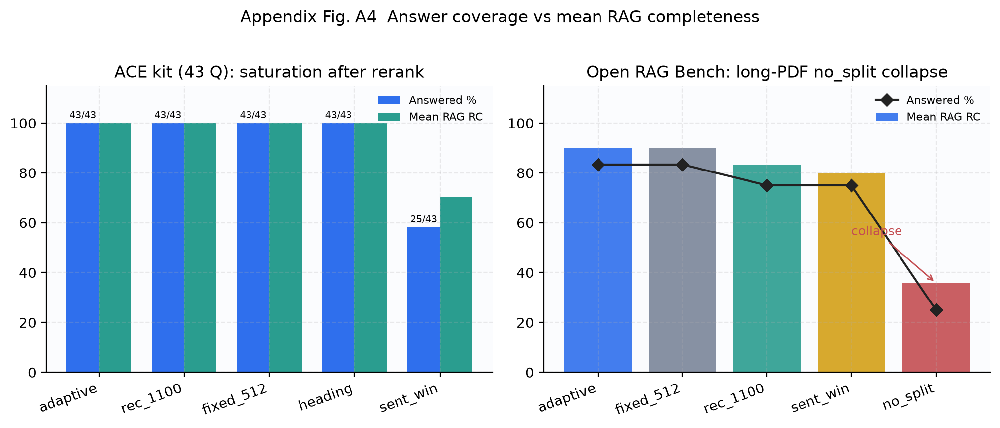
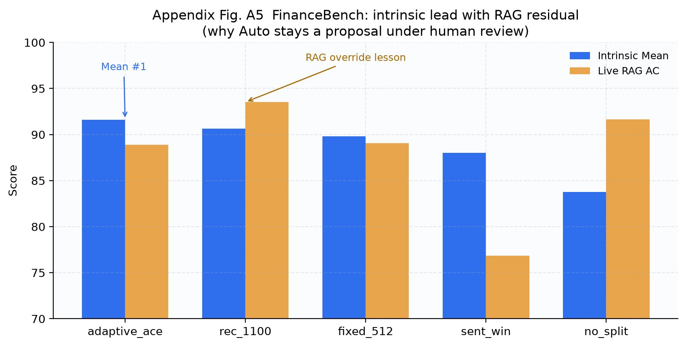
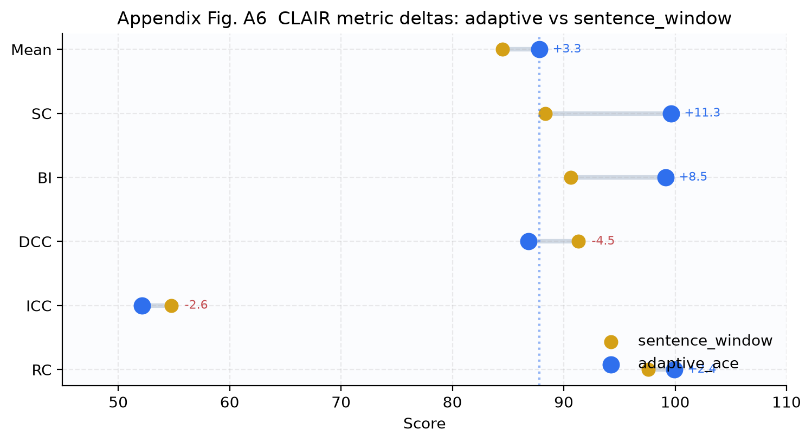

title: "Adaptive Chunk Engine: Governed Per-Document Chunking Selection for Enterprise RAG" venue: "COLING 2027 Industry Track" category: "Emerging / Enabling infrastructure + Deployed Methods & System Evaluation" blind: true page_budget: "6 pages body (+ unlimited refs / ethics / appendix)" revision: "改5 — stronger Abstract/Intro (sample-paper style), pipeline math, three-line tables"
Anonymous authors
Paper under double-blind review for COLING 2027 Industry Track
Retrieval-Augmented Generation (RAG) has become a default architecture for grounding large language models (LLMs) on private enterprise corpora, yet industrial deployments still treat document chunking as a one-size-fits-all preprocessing knob. In practice, legal opinions, 10-K filings, and long scientific PDFs respond differently to fixed-token, recursive, heading-aware, or sentence-window splitters; a globally locked strategy therefore silently taxes retrieval quality, indexing cost, and compliance auditability. Building on Adaptive Chunking (de Moura et al., 2026), which scores candidates with five intrinsic metrics (RC, ICC, DCC, BI, SC) and selects a splitter per document, we present Adaptive Chunk Engine (ACE)—an auditable productization of that principle for enterprise RAG. ACE turns metric-guided selection into a reviewable decision artifact with strategy registries, CanonicalChunk contracts, reproduction manifests, a retrieval-aligned RAG micro-loop objective, dense retrieval with cross-encoder reranking, and a human-triggered optimization gate when Auto and live RAG disagree. Under a production-like stack (Qwen3-Embedding-8B, Cohere rerank-v3.5, rag_microloop, gpt-4o judge), ACE reaches mean RAG completeness/correctness of 100.0/100.0 on a controlled kit (43/43 answered; vs. 64.2/64.6 without rerank), ranks first on full-CLAIR intrinsic Mean (87.8), and ties best RAG on Open RAG Bench (90.0/82.5) while exposing the collapse of non-indexable no_split on long PDFs (35.8/26.7). We distill three practitioner lessons: ship dual evaluation lanes, treat Auto as a proposal under human review, and compare ranks within a protocol—not absolute scores across stacks.
A Retrieval-Augmented Generation (RAG) system pairs an LLM with an external knowledge source so that private or time-sensitive evidence can enter the context window at inference time (Lewis et al., 2020; Guu et al., 2020). This pattern has driven rapid industrial adoption for enterprise search, customer support, and regulated document QA (Gao et al., 2024; Teixeira de Lima et al., 2025). Yet in production, the first irreversible decision in the pipeline is often not the retriever or the generator—it is how documents are cut into chunks. Chunk size and splitter choice are known first-order levers for both retrieval and downstream answer quality (Chen et al., 2024; Wang et al., 2024), and recent work continues to invent better single algorithms: late contextual chunk embeddings (Günther et al., 2024), hierarchical tree indexing (Sarthi et al., 2024), graph-community summaries (Edge et al., 2024), and LLM-assisted structured chunking (Jain et al., 2025). What remains under-served in industrial practice is a different question: given a registry of already-deployable splitters, which strategy should be locked for this document, under audit constraints, when intrinsic quality signals and live RAG feedback can disagree?
Enterprise multi-tenant platforms make that question sharper. Legal, financial, and arXiv-style PDFs differ in heading density, table structure, and evidence locality; a recursive splitter that wins on 10-Ks can underperform on short regulatory notes, while sentence windows that look coherent intrinsically can become brittle under dense+rerank retrieval (Karpukhin et al., 2020; Nogueira and Cho, 2019). Simultaneously, operators need more than a higher mean score: they need reproducible manifests, CanonicalChunk contracts for multi-sink indexing, and a human veto when Auto would regress a locked baseline—requirements that research demos rarely expose as first-class product surfaces. Adaptive retrieval controllers such as Self-RAG and CRAG (Asai et al., 2024; Yan et al., 2024) decide whether/how to fetch evidence at query time; they do not govern the offline segmentation policy that determines what can be retrieved in the first place.
Adaptive Chunking (de Moura et al., 2026) established that scoring candidates with five document-intrinsic metrics and selecting a winner per document improves RAG on CLAIR. We industrialize that idea as Adaptive Chunk Engine (ACE): an enabling-infrastructure layer that (i) selects $s^\star(d)$ from a strategy registry, (ii) optionally blends intrinsic Mean with a cheap micro evidence-coverage signal (rag_microloop), (iii) evaluates under a production-like dense top-$K_c$ → rerank top-$K$ lane, and (iv) routes regressions to human review rather than silently shipping Auto. Empirically, aligning the eval lane with rerank recovers kit RAG from 64→100 mean scores; on public corpora ACE leads CLAIR/FinanceBench intrinsic Mean and ties best long-document RAG while documenting the residual override case that motivates governance.
Contributions for practitioners.
adaptive_ace with Strategy Registry, CanonicalChunk contracts, ReproductionManifests, and optional RAG micro-loop blending—turning per-document choice into an auditable artifact.no_split collapses, and when humans must override Auto—plus per-document strategy-mix statistics under rag_microloop.RAG foundations. Retrieval-augmented generation grounds LLM answers in non-parametric memory (Lewis et al., 2020), with related lines including REALM (Guu et al., 2020), FiD (Izacard and Grave, 2021), RETRO (Borgeaud et al., 2022), and Atlas (Izacard et al., 2023). Dense passage retrieval (Karpukhin et al., 2020) and late-interaction multi-vector models such as ColBERT (Khattab and Zaharia, 2020) established the bi-encoder / late-interaction stack used in modern enterprise RAG; sentence-level embedding models (Reimers and Gurevych, 2019) remain the workhorse for chunk indexing. Recent surveys synthesize indexing, retrieval, and generation trade-offs for LLM-era RAG (Gao et al., 2024).
Chunking and retrieval granularity. Chunk size and splitter choice are first-order levers: best-practice studies find material sensitivity to chunking heuristics (Wang et al., 2024), while Dense X Retrieval shows that finer units (e.g., propositions) can outperform passage indexing under fixed compute (Chen et al., 2024). Late Chunking embeds long context before pooling per chunk to reduce context loss (Günther et al., 2024). Hierarchical / tree indexing (RAPTOR; Sarthi et al., 2024) and graph-community summarization (GraphRAG; Edge et al., 2024) reorganize document structure for multi-hop or global questions. Industry systems increasingly use LLM-assisted structured chunking (AutoChunker; Jain et al., 2025). Most of these methods still commit to one segmentation policy—or one hierarchy—across documents.
Adaptive retrieval vs. adaptive chunking. Controllers such as Self-RAG (Asai et al., 2024) and CRAG (Yan et al., 2024) adapt whether/how to retrieve and refine evidence at query time. In-context retrieval-augmented LMs similarly treat retrieval as a controllable component (Ram et al., 2023). ACE instead adapts the offline chunking strategy per document, then evaluates it under a production-like dense+rerank lane (Nogueira and Cho, 2019). Adaptive Chunking (de Moura et al., 2026) introduced intrinsic metric selection on CLAIR; ACE productizes registries, manifests, a RAG micro-loop, and a human gate when intrinsic ranking disagrees with live RAG.
Evaluation and benchmarks. Reference-free / LLM-judge RAG metrics (RAGAS; Es et al., 2024) and automated judge frameworks (ARES; Saad-Falcon et al., 2024) make continuous evaluation practical; MT-Bench / Chatbot Arena established LLM-as-judge methodology more broadly (Zheng et al., 2023). Industry dataset-design work stresses protocol honesty (Teixeira de Lima et al., 2025). We report on FinanceBench (Islam et al., 2023) and Open RAG Bench (Vectara, 2024) alongside full CLAIR, always comparing ranks within a protocol.
In multi-tenant RAG platforms, chunking is simultaneously a quality, cost, and compliance lever. Formally, each document $d$ is mapped by a splitter $s\in\mathcal{S}$ to an ordered chunk set $C_s(d)={c_1,\ldots,c_{n_s}}$. Enterprise goals are to maximize downstream RAG utility while keeping $|C_s(d)|$ and audit overhead within budget, and while preserving a human-readable rationale for why $s$ was locked.
ACE targets five design goals: (i) per-document adaptivity without retraining; (ii) auditability via manifests; (iii) human veto when RAG regresses; (iv) protocol honesty (offline CI ≠ live neural scores; Teixeira de Lima et al., 2025; Es et al., 2024); and (v) retrieval realism (dense top-$K_c$ + cross-encoder rerank top-$K$; Karpukhin et al., 2020; Nogueira and Cho, 2019), consistent with practitioner guidance that chunking and reranking dominate RAG quality (Wang et al., 2024).
Figure 1 shows the overall workflow of ACE in three stages: strategy selection, retrieval & evaluation, and governance.
Figure 1. Adaptive Chunk Engine (ACE): Selection → Retrieval → Governance Loop.
Following de Moura et al. (2026), each candidate splitter $s$ is scored with five intrinsic metrics on $C_s(d)$: RC (retrieval/coverage-oriented completeness), ICC / DCC (intra-/document coherence under the live embedder), BI (boundary integrity), and SC (structural coverage). We summarize them by their arithmetic mean (reported as a 0–100 percent in tables):
$$ \mu(s,d)=\frac{1}{5}\big(\mathrm{RC}+\mathrm{ICC}+\mathrm{DCC}+\mathrm{BI}+\mathrm{SC}\big)(s,d). \tag{1} $$
In intrinsic-only mode, ACE locks
$$ s^\star(d)=\arg\max_{s\in\mathcal{S}}\mu(s,d). \tag{2} $$
This recovers Adaptive Chunking’s per-document rule while packaging the winner, score vector, and parameters into a ReproductionManifest.
Intrinsic leadership does not always imply live RAG leadership (FinanceBench residual below). In rag_microloop mode, ACE first shortlists the top-$m$ strategies by $\mu$, then blends each shortlisted mean with a cheap micro evidence-coverage score that does not call the LLM judge. For a question $q$ with gold evidence span $e$ and retrieved chunks $R(q)$,
$$ \mathrm{Cov}(e,R)=\frac{|T(e)\cap T(R)|}{|T(e)|}, \tag{3} $$
where $T(\cdot)$ extracts alphanumeric term sets. Averaging over up to $Q$ probe questions yields $\rho(s,d)$. The blended objective is
$$ \mathrm{Blend}(s,d)=\alpha\,\mu(s,d)+(1-\alpha)\,\rho(s,d),\qquad s^\star(d)=\arg\max_{s\in\mathrm{Shortlist}_m(d)}\mathrm{Blend}(s,d), \tag{4} $$
with defaults $m{=}3$ and $\alpha{=}0.55$. Intuitively, $\alpha$ trades intrinsic document structure against a retrieval-aligned coverage proxy before the expensive judge is run.
After locking $s^\star(d)$, ACE materializes CanonicalChunks and indexes them for dense retrieval (Reimers and Gurevych, 2019; Karpukhin et al., 2020). For query embedding $\mathbf{q}$ and chunk embedding $\mathbf{h}_i$,
$$ \mathrm{sim}(q,c_i)=\frac{\mathbf{q}^\top\mathbf{h}_i}{|\mathbf{q}|\,|\mathbf{h}i|}, \qquad R{K_c}(q)=\mathrm{Top}\text{-}K_c\big{\mathrm{sim}(q,c_i)\big}, \tag{5} $$
followed by cross-encoder reranking to $K$ passages (Nogueira and Cho, 2019). Our live defaults are $K_c{=}20$ and $K{=}5$. An LLM judge (Zheng et al., 2023; Saad-Falcon et al., 2024) then returns per-question completeness/correctness scores in $[0,100]$; we report their means over answered questions and the answered fraction $N_{\mathrm{ans}}/N$.
If live RAG regresses versus a locked baseline, ACE routes the case to human review—retain, revise $s$, or start a new experiment—an offline analogue of corrective/reflective control (Yan et al., 2024; Asai et al., 2024). Candidates evaluated: fixed_token_{256,512}, recursive_text, recursive_text_1100, sentence_window, heading_section, no_split, and adaptive_ace.
| Protocol | Embeddings / retrieve | Rerank | Judge | Role |
|---|---|---|---|---|
| Offline | Hashed n-grams / lexical | — | Term-coverage | CI / regression |
| Live (primary) | Qwen3-Embedding-8B dense |
Cohere rerank-v3.5 |
gpt-4o |
Production-like |
Score reporting. Unless noted, RAG completeness and correctness are mean scores on a 0–100 scale over answered questions (LLM-judge JSON; Zheng et al., 2023), not raw question counts. We also report answered fractions (e.g., 43/43). Absolute magnitudes are not transferable across corpora or offline vs live; compare ranks within a protocol (Teixeira de Lima et al., 2025; Es et al., 2024; Saad-Falcon et al., 2024).
| Corpus | Scale reported |
|---|---|
| ACE kit | 6 docs · 43 Q |
| CLAIR | Full 33 docs · ≤3 live QA/doc (98 scored) |
| FinanceBench (Islam et al., 2023) | 18 docs · ≤36 Q (33 scored) |
| Open RAG Bench (Vectara, 2024) | 4 docs · ≤40 Q (12 scored) |
We report settings that demonstrate ACE’s industrial advantage and omit non-production no_split “wins” on short markdown as lead claims. Figure 2 summarizes three advantage highlights; Figures 3–6 add stack progression, cross-corpus RAG, selection mix, and intrinsic Means.
Figure 2. ACE-advantage highlights (live stages C/D).

| Stack | Adaptive mean RAG RC/AC | Answered |
|---|---|---|
| Embed-small, no rerank | 64.2 / 64.6 | — |
| + Cohere rerank-v3.5 | 100.0 / 100.0 | 43/43 |
| + Qwen3-Embedding-8B | 100.0 / 100.0 | 43/43 |
| + rag_microloop (primary) | 100.0 / 100.0 | 43/43 |
Figure 4. Kit stack progression (stages A→C): after rerank, adaptive RAG saturates; embedding upgrade and micro-loop preserve the ceiling while improving governance readiness.

Full pre-aggregation intrinsic metrics (stage C):
| Method | RC | ICC | DCC | BI | SC | Mean |
|---|---|---|---|---|---|---|
| adaptive_ace | 100.0 | 53.23 | 96.48 | 100.0 | 100.0 | 89.94 |
| recursive_text | 100.0 | 53.43 | 96.94 | 98.7 | 100.0 | 89.81 |
| recursive_text_1100 | 100.0 | 53.01 | 95.93 | 100.0 | 100.0 | 89.79 |
| fixed_token_512 | 100.0 | 53.64 | 95.06 | 97.66 | 100.0 | 89.27 |
| sentence_window | 58.33 | 61.43 | 83.96 | 21.35 | 60.69 | 57.15 |
With production-like rerank, adaptive saturates kit RAG (mean 100/100; 43/43 answered); sentence_window remains brittle (70.4/73.1; 25/43 answered).
| Method | RC | ICC | DCC | BI | SC | Mean |
|---|---|---|---|---|---|---|
| adaptive_ace | 99.92 | 52.12 | 86.85 | 99.13 | 99.62 | 87.8 |
| fixed_token_512 | 100.0 | 49.06 | 86.65 | 99.55 | 100.0 | 87.05 |
| recursive_text_1100 | 99.96 | 47.24 | 76.72 | 99.72 | 100.0 | 84.73 |
| sentence_window | 97.57 | 54.76 | 91.3 | 90.65 | 88.32 | 84.52 |
| no_split | 100.0 | 53.63 | 100.0 | 100.0 | 3.03 | 71.33 |
| Method | Mean RAG RC | Mean RAG AC | Answered |
|---|---|---|---|
| no_split | 98.99 | 94.95 | 97/98 |
| adaptive_ace | 96.57 | 90.5 | 94/98 |
| recursive_text_1100 | 95.96 | 92.93 | 93/98 |
| fixed_token_512 | 93.23 | 88.69 | 89/98 |
| recursive_text | 92.73 | 89.7 | 89/98 |
| sentence_window | 76.26 | 73.23 | 71/98 |
Adaptive leads intrinsic Mean (87.8). On live RAG, adaptive_ace is second only to no_split and ahead of all production-viable splitters (fixed_token_512, recursive variants); sentence_window lags by ~20 RAG points. We report no_split in full for transparency: it can inflate CLAIR-style RAG by stuffing nearly the entire document into context, but its intrinsic SC collapses to 3.03 and it is not a shippable indexer (see also Open RAG Bench, where the same strategy collapses on long PDFs). Earlier drafts omitted no_split / fixed_token_512 from this RAG table only to keep the lead narrative short—not because those rows were unavailable.
| Method | Mean RAG RC | Mean RAG AC | Answered |
|---|---|---|---|
| adaptive_ace | 90.0 | 82.5 | 10/12 |
| fixed_token_512 | 90.0 | 82.5 | 10/12 |
| recursive_text_1100 | 83.33 | 79.17 | 9/12 |
| no_split | 35.83 | 26.66 | 3/12 |
On long arXiv PDFs, naive full-doc context collapses; adaptive ties best production RAG.
| Method | Mean RAG RC | Mean RAG AC | Answered |
|---|---|---|---|
| recursive_text_1100 | 99.07 | 93.52 | 32/33 |
| recursive_text | 96.43 | 91.52 | 31/33 |
| adaptive_ace | 95.83 | 88.89 | 29/33 |
| sentence_window | 86.48 | 76.85 | 27/33 |
Adaptive intrinsic Mean 91.61 (1st) vs recursive_1100 90.64. Live RAG favors larger recursive chunks on this QA mix. This residual gap is exactly why Auto must remain a proposal under human review—not a reason to abandon metric selection. Full RC/ICC/DCC/BI/SC rows are in Appendix A.
Figure 3. Cross-corpus live RAG: adaptive vs a corpus-specific contrast method (sentence_window on kit/CLAIR; recursive_1100 on FinanceBench; no_split on Open RAG Bench).

Under rag_microloop, ACE does not invent a new splitter; it locks a registry strategy per document after blending intrinsic Mean with micro evidence-coverage. Figure 5 shows locked-strategy histograms.
Figure 5. Per-document strategy locks (blend winner among micro-loop shortlist).

On CLAIR, locks concentrate on fixed_token_512 (18/33) with a long tail of recursive/sentence/heading choices. On FinanceBench, locks shift toward recursive_text_1100 (8/18)—consistent with that corpus’s RAG preference—while still diversifying when metrics disagree. This is the product story: adaptivity is a governed mixture of known strategies, not a single global default.
Figure 6. Intrinsic Mean across public corpora.

| Claim | Supported? |
|---|---|
| Adaptivity recovers strong splitters | Yes |
| Rerank needed for production-like dense RAG | Yes (kit 64.2→100.0 mean RC) |
| Brittle sentence windows lose | Yes |
| Long-doc RAG needs chunking (not no_split) | Yes |
| Intrinsic = RAG optimum always | No (FinanceBench residual) |
| ACE locks a diverse strategy mix | Yes (Fig. 5) |
100/100 as question counts.no_split as an indexer for long documents.ACE extends Adaptive Chunking into an auditable framework for per-document chunking selection, combining intrinsic metric-based selection, production-aligned retrieval evaluation, and human-triggered governance. Intrinsic evidence favors adaptive_ace, rerank repairs live dense RAG, and long-document benchmarks expose why governed chunking beats naive full-doc context—while residual disagreements motivate human-triggered optimization.
Live QA is capped per document under API cost controls; FinanceBench/ORB subsets are expanded beyond smoke but not exhaustive. Offline lexical RAG is a CI proxy. LLM-as-judge introduces variance (Zheng et al., 2023; Es et al., 2024). Absolute scores must not be compared across protocols. We do not claim superiority over hierarchical indexing (Sarthi et al., 2024) or graph-community RAG (Edge et al., 2024); ACE governs which classical splitter to lock under audit constraints. Large-scale multi-tenant telemetry is out of scope for this Emerging submission.
ACE evaluates document chunking for RAG. Benchmark subsets may contain sensitive corporate/regulatory text; we use published adapters. Live evaluations call third-party APIs; operators must ensure contractual compliance and PII scrubbing. Human override is intentional for regulated workflows.
Asai, A., Wu, Z., Wang, Y., Sil, A., and Hajishirzi, H. 2024. Self-RAG: Learning to Retrieve, Generate, and Critique through Self-Reflection. In Proceedings of ICLR.
Borgeaud, S., Mensch, A., Hoffmann, J., Cai, T., Rutherford, E., Millican, K., van den Driessche, G., Lespiau, J., Damoc, B., Clark, A., et al. 2022. Improving Language Models by Retrieving from Trillions of Tokens. In Proceedings of ICML.
Chen, T., Wang, H., Chen, S., Yu, W., Ma, K., Zhao, X., Zhang, H., and Yu, D. 2024. Dense X Retrieval: What Retrieval Granularity Should We Use? In Proceedings of EMNLP, pages 15159–15177.
de Moura Junior, P. R., Lelong, J., and Blangero, A. 2026. Adaptive Chunking: Optimizing Chunking-Method Selection for RAG. In Proceedings of LREC 2026.
Edge, D., Trinh, H., Cheng, N., Bradley, J., Chao, A., Mody, A., Truitt, S., and Larson, J. 2024. From Local to Global: A Graph RAG Approach to Query-Focused Summarization. arXiv:2404.16130.
Es, S., James, J., Espinosa Anke, L., and Schockaert, S. 2024. RAGAS: Automated Evaluation of Retrieval Augmented Generation. In Proceedings of EACL (System Demonstrations).
Gao, Y., Xiong, Y., Gao, X., Jia, K., Pan, J., Bi, Y., Dai, Y., Sun, J., Wang, M., and Wang, H. 2024. Retrieval-Augmented Generation for Large Language Models: A Survey. arXiv:2312.10997.
Guu, K., Lee, K., Tung, Z., Pasupat, P., and Chang, M. 2020. Retrieval Augmented Language Model Pre-Training. In Proceedings of ICML.
Günther, M., Mohr, I., Williams, D. J., Wang, B., and Xiao, H. 2024. Late Chunking: Contextual Chunk Embeddings Using Long-Context Embedding Models. arXiv:2409.04701.
Islam, P., Kannappan, A., Kiela, D., Qian, R., Scherrer, N., and Vidgen, B. 2023. FinanceBench: A New Benchmark for Financial Question Answering. arXiv:2311.11944.
Izacard, G. and Grave, E. 2021. Leveraging Passage Retrieval with Generative Models for Open Domain Question Answering. In Proceedings of EACL, pages 874–880.
Izacard, G., Lewis, P., Lomeli, M., Hosseini, L., Petroni, F., Ishii, S., Dwivedi-Yu, J., Joulin, A., Riedel, S., and Grave, E. 2023. Atlas: Few-shot Learning with Retrieval Augmented Language Models. Journal of Machine Learning Research, 24(251).
Jain, A., Aggarwal, P., and Saladi, A. 2025. AutoChunker: Structured Text Chunking and its Evaluation. In Proceedings of ACL 2025 (Industry Track), pages 983–995.
Karpukhin, V., Oguz, B., Min, S., Lewis, P., Wu, L., Edunov, S., Chen, D., and Yih, W. 2020. Dense Passage Retrieval for Open-Domain Question Answering. In Proceedings of EMNLP, pages 6769–6781.
Khattab, O. and Zaharia, M. 2020. ColBERT: Efficient and Effective Passage Search via Contextualized Late Interaction over BERT. In Proceedings of SIGIR, pages 39–48.
Lewis, P., Perez, E., Piktus, A., Petroni, F., Karpukhin, V., Goyal, N., Küttler, H., Lewis, M., Yih, W., Rocktäschel, T., Riedel, S., and Kiela, D. 2020. Retrieval-Augmented Generation for Knowledge-Intensive NLP Tasks. In Advances in Neural Information Processing Systems, 33.
Nogueira, R. and Cho, K. 2019. Passage Re-ranking with BERT. arXiv:1901.04085.
Ram, O., Levine, Y., Dalmedigos, I., Muhlgay, D., Shashua, A., Leyton-Brown, K., and Shoham, Y. 2023. In-Context Retrieval-Augmented Language Models. Transactions of the Association for Computational Linguistics, 11:1316–1331.
Reimers, N. and Gurevych, I. 2019. Sentence-BERT: Sentence Embeddings using Siamese BERT-Networks. In Proceedings of EMNLP-IJCNLP, pages 3982–3992.
Saad-Falcon, J., Khattab, O., Potts, C., and Zaharia, M. 2024. ARES: An Automated Evaluation Framework for Retrieval-Augmented Generation Systems. In Proceedings of NAACL, pages 338–354.
Sarthi, P., Abdullah, S., Tuli, A., Khanna, S., Goldie, A., and Manning, C. D. 2024. RAPTOR: Recursive Abstractive Processing for Tree-Organized Retrieval. In Proceedings of ICLR.
Teixeira de Lima, R., Gupta, S., Berrospi, C., Mishra, L., Dolfi, M., Staar, P., and Vagenas, P. 2025. Know Your RAG: Dataset Taxonomy and Generation Strategies for Evaluating RAG Systems. In Proceedings of COLING 2025: Industry Track, pages 39–57.
Vectara. 2024. Open RAG Bench. Benchmark suite for open-domain RAG evaluation.
Wang, X., Wang, Z., Gao, X., Zhang, F., Wu, Y., Xu, Z., Shi, T., Wang, L., Huang, S., Li, J., et al. 2024. Searching for Best Practices in Retrieval-Augmented Generation. arXiv:2407.01219.
Yan, S., Gu, J., Zhu, Y., and Ling, Z. 2024. Corrective Retrieval Augmented Generation. arXiv:2401.15884.
Zheng, L., Chiang, W., Sheng, Y., Zhuang, S., Wu, Z., Zhuang, Y., Lin, Z., Li, Z., Li, D., Xing, E., Zhang, H., Gonzalez, J. E., and Stoica, I. 2023. Judging LLM-as-a-Judge with MT-Bench and Chatbot Arena. In Advances in Neural Information Processing Systems, 36.
Following COLING Industry practice of placing heatmaps / profile plots / rank views in the appendix (cf. STAND-Guard; Know Your RAG; Federated Retrieval), we add ACE-advantage visualizations that do not consume body-page budget.
Figure A1. Five-metric radar on full CLAIR. adaptive_ace keeps a balanced high profile; no_split spikes DCC/BI but collapses SC (3.03)—a non-indexable trap.

Figure A2. Stage-C intrinsic Mean by domain × method. adaptive_ace is best on technical / legal / sustainability (gold outline).

Figure A3. Rank bump chart under the ACE-advantage lens: adaptive stays at or tied for rank-1 on CLAIR/FinanceBench intrinsic Mean and Open RAG Bench live RAG RC.

Figure A4. Kit saturates (43/43) after rerank; Open RAG Bench shows the long-PDF no_split collapse (answered 3/12; RAG RC 35.8).

Figure A5. Adaptive wins intrinsic Mean (91.61) while recursive_1100 leads live RAG AC—exactly the governance / override lesson in the main text.

Figure A6. Lollipop deltas: adaptive gains on RC/BI/SC/Mean; small ICC/DCC trade-offs do not overturn Mean leadership.

| Method | RC | ICC | DCC | BI | SC | Mean |
|---|---|---|---|---|---|---|
| adaptive_ace | 99.84 | 61.21 | 89.34 | 97.64 | 100.0 | 91.61 |
| recursive_text_1100 | 100.0 | 61.87 | 88.27 | 98.8 | 100.0 | 90.64 |
| fixed_token_512 | 99.89 | 53.59 | 84.66 | 98.79 | 100.0 | 89.82 |
| sentence_window | 98.92 | 65.28 | 90.88 | 95.51 | 84.29 | 88.02 |
| no_split | 100.0 | 64.93 | 100.0 | 100.0 | 50.0 | 83.77 |
| Method | RC | ICC | DCC | BI | SC | Mean |
|---|---|---|---|---|---|---|
| fixed_token_512 | 100.0 | 60.04 | 87.84 | 99.33 | 100.0 | 89.44 |
| adaptive_ace | 99.89 | 56.8 | 84.93 | 98.9 | 99.51 | 88.0 |
| recursive_text_1100 | 100.0 | 53.46 | 78.16 | 99.18 | 100.0 | 86.16 |
| sentence_window | 94.66 | 63.22 | 89.66 | 69.62 | 69.04 | 77.24 |
| no_split | 100.0 | 58.6 | 100.0 | 100.0 | 0.0 | 71.72 |
| Method | RC | ICC | DCC | BI | SC | Mean |
|---|---|---|---|---|---|---|
| Adaptive Chunking | 99.0 | 68.2 | 88.8 | 99.4 | 99.9 | 91.07 |
| LangChain recursive | 96.1 | 65.6 | 88.8 | 95.0 | 97.7 | 88.62 |
| Sentence | 86.3 | 78.4 | 72.5 | 61.9 | 67.2 | 73.26 |
| Method | Mean RAG RC | Mean RAG AC | Answered |
|---|---|---|---|
| Adaptive Chunking | 67.7 | 78.0 | 65/99 |
| LangChain recursive | 58.1 | 70.1 | 49/99 |
Open RAG Bench intrinsic ranks fixed_token_512 slightly above adaptive on Mean, but live RAG ties adaptive with fixed_512 at 90.0/82.5 while no_split collapses—reinforcing rank-within-protocol reporting.